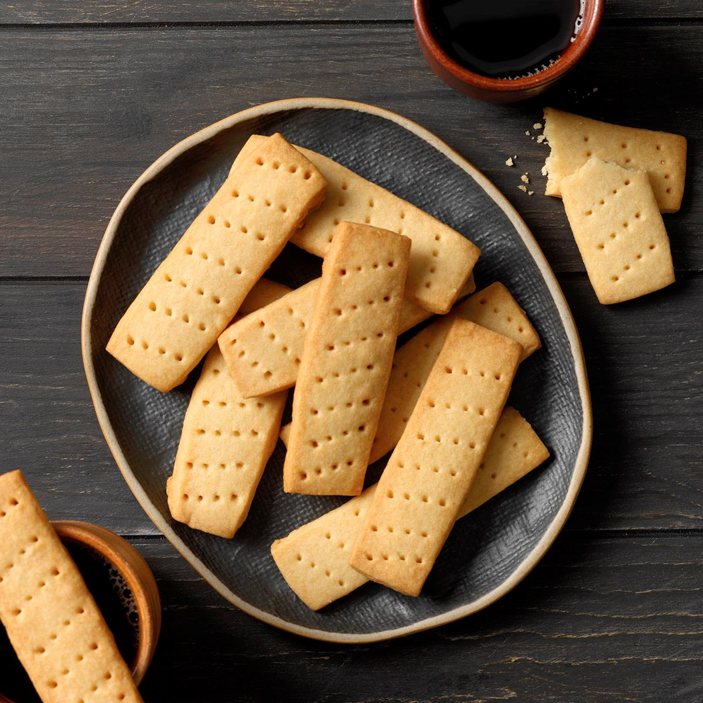

return
Scottish Shortbread

Description
This Scottish flagship food was popular during the 12th century onwards, but it was Mary,
Queen of Scots who perfected and refined it to become the traditional recipe we know today.
Many believe her court’s French influences helped shape her insatiable shortbread obsession.
Ingredients
- 1 1/2 cups almond flour
- 1 cup brown rice flour
- 1/2 cup sorghum flour
- 1/2 cup white sugar
- 2 teaspoons ground cinnamon
- 3/4 teaspoon ground allspice
- 1/2 teaspoon ground cardamom
- 1/2 teaspoon ground ginger
- 1/2 teaspoon sea salt
- 1 cup unsalted butter, softened
Preparation
- Preheat oven to 350°F (175°C).
- Place almond flour, brown rice flour, sorghum flour, sugar, cinnamon,
allspice, cardamom, ginger, and salt together in a large resealable bag;
seal and shake well to combine.
- Mix butter and flour mixture together in a large bowl with an electric
mixer until well combined.
- Roll dough into walnut-size balls and place 2 inches apart onto ungreased
baking sheets; flatten balls slightly.
- Bake in the preheated oven until edges are golden brown, about
27 minutes. Cool in the pan for 5 minutes before transferring to
a wire rack to cool completely.
Up